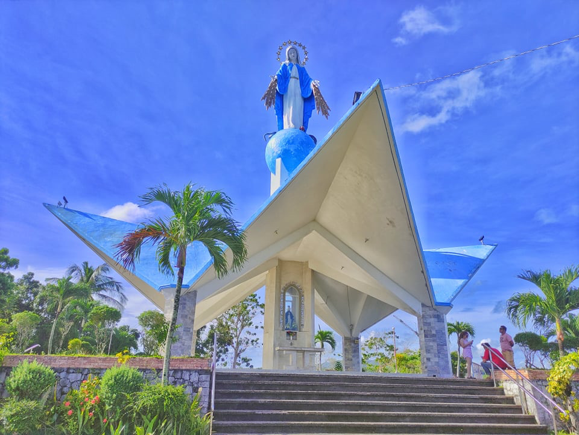
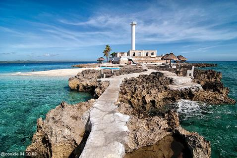

Back to Map
BOGO CITY

Bogo City Beach
 medal shrine bogo city" title="our lady of the miraculous
medal shrine bogo city" style="width:100%">our lady of the miraculous
medal shrine bogo city" style="width:100%">
our lady of the miraculous
medal shrine bogo city

Capitancillo Island
Description:
Bogo, officially the City of Bogo (Cebuano: Dakbayan sa Bogo; Filipino: Lungsod ng Bogo),
is a 6th class component city in the province of Cebu, Philippines. According to the 2020 census,
it has a population of 88,867 people.
The plebiscite for the cityhood of Bogo was held on June 16, 2007,
in which 97.82% of voters of Bogo voted for cityhood.
Former representative Clavel Asas-Martinez announced that the cityhood of Bogo has been ratified.
It became the sixth component city of Cebu province.